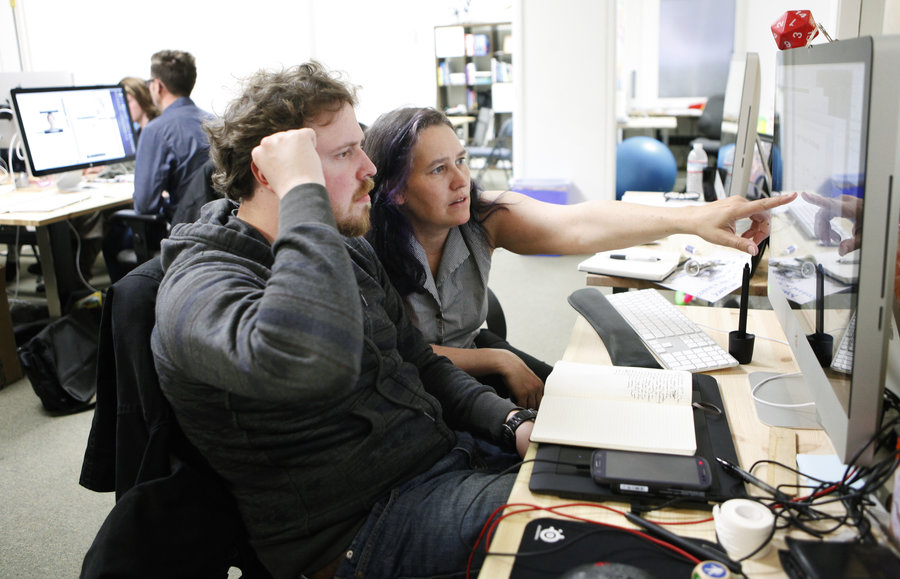

5 things I love about my detour into coding
Jessica Jordan - Software Developer @ Earlham Institute, Norwich
This is where I code now
The Earlham Institute in all its beauty
...and talk about coding

Front-End Workshop at TU Munich for the Anita Borg Celebration 2016
But I haven't done this all my life
After years of studying...
...my detour into web development started!

Few technologies got me started to create my own!
HTML & CSS & JavaScript
And these 5 things I favorite most about my detour into coding
Coding is fun
Coding is empowering
Lynn Cornway, Computer Engineer
Coding makes you grow
trending_up
Coding can be humbling
...in a good way! favorite



Coding will let you meet great people along the way
Enjoy your own detour!
Thanks!